A scenography conceived as a physical metaphor for the drama. Cristian Taraborrelli designs for Verdi’s Luisa Miller a world that breathes, fractures, and ultimately collapses under the weight of power and injustice. Directed by Stefano Vizioli and conducted by Michael Güttler, the production at Malmö Opera transforms the stage into a living organism where architecture becomes emotion.
Two enormous hands — monumental, disturbing, inescapable — dominate the space: they split the green lawn of innocence, they squeeze the walls of Miller’s house, they strangle the world of the protagonists. The set does not illustrate the story; it embodies its violence.
Una scenografia concepita come metafora fisica del dramma. Cristian Taraborrelli disegna per la Luisa Miller di Verdi un mondo che respira, si frattura e infine crolla sotto il peso del potere e dell’ingiustizia. Con la regia di Stefano Vizioli e la direzione musicale di Michael Güttler, la produzione alla Malmö Opera trasforma il palcoscenico in un organismo vivente dove l’architettura diventa emozione.
Due mani enormi — monumentali, inquietanti, ineludibili — dominano lo spazio: spaccano il prato verde dell’innocenza, stringono le pareti della casa di Miller, strangolano il mondo dei protagonisti. La scena non illustra la storia: ne incarna la violenza.
Une scénographie conçue comme métaphore physique du drame. Cristian Taraborrelli dessine pour la Luisa Miller de Verdi un monde qui respire, se fracture et finalement s’effondre sous le poids du pouvoir et de l’injustice. Mise en scène par Stefano Vizioli et dirigée par Michael Güttler, la production au Malmö Opera transforme la scène en un organisme vivant où l’architecture devient émotion.
Deux mains énormes — monumentales, inquiétantes, inéluctables — dominent l’espace : elles fendent la pelouse verte de l’innocence, serrent les murs de la maison de Miller, étranglent le monde des protagonistes. Le décor n’illustre pas l’histoire : il en incarne la violence.
La Visione
The scenographic concept is built on three transformations of the same space, each reflecting the emotional and dramatic arc of the opera.
Act I — The Lawn of Innocence. A vast green meadow covered in flowers, a world of freedom and purity that mirrors the feelings of Luisa and her community. Two colossal hands emerge at the sides of the stage, pressing against the earth, trying to break open the green platform. Beneath it: only mud and dust. The negative characters — Wurm, Count Walter — rise from the cracks like threats from below.
Act I/II — The Castle of Walter. A massive black wall engulfs the world of purity. Mysterious openings, trapdoors, Escher-like ladders disappear into the darkness of Walter and Wurm’s gloomy world. Miller’s house — a small white room with a table and chair — stands fragile and exposed against this oppressive architecture.
Act III — The Strangulation. The little house of Miller is strangled and suffocated by a giant hand. The lawn has disappeared. The platform is only dust and mud. Everything is destroyed by an inexorable and brutal violence. The little white and pure house is totally isolated, crushed.
Il concept scenografico si costruisce su tre trasformazioni dello stesso spazio, ciascuna specchio dell’arco emotivo e drammatico dell’opera.
Atto I — Il Prato dell’Innocenza. Un grande prato verde coperto di fiori, un mondo di libertà e purezza che riflette i sentimenti di Luisa e della sua comunità. Due mani colossali emergono ai lati del palcoscenico, premono contro la terra, tentano di spaccare la piattaforma verde. Sotto: solo fango e polvere. I personaggi negativi — Wurm, il Conte Walter — salgono dalle crepe come minacce dal basso.
Atto I/II — Il Castello di Walter. Un enorme muro nero inghiotte il mondo della purezza. Aperture misteriose, botole, scale alla Escher scompaiono nell’oscurità del mondo cupo di Walter e Wurm. La casa di Miller — una piccola stanza bianca con un tavolo e una sedia — rimane fragile e esposta davanti a questa architettura oppressiva.
Atto III — Lo Strangolamento. La piccola casa di Miller è strangolata e soffocata da una mano gigante. Il prato è scomparso. La piattaforma è solo polvere e fango. Tutto è distrutto da una violenza inesorabile e brutale. La piccola casa bianca e pura è totalmente isolata, schiacciata.
Le concept scénographique se construit sur trois transformations du même espace, chacune reflétant l’arc émotionnel et dramatique de l’opéra.
Acte I — La Pelouse de l’Innocence. Une vaste prairie verte couverte de fleurs, un monde de liberté et de pureté qui reflète les sentiments de Luisa et de sa communauté. Deux mains colossales émergent des côtés de la scène, pressent contre la terre, tentent de briser la plateforme verte. En dessous : seulement boue et poussière. Les personnages négatifs — Wurm, le Comte Walter — montent des fissures comme des menaces souterraines.
Acte I/II — Le Château de Walter. Un énorme mur noir engloutit le monde de la pureté. Ouvertures mystérieuses, trappes, échelles à la Escher disparaissent dans l’obscurité du monde sombre de Walter et Wurm. La maison de Miller — une petite chambre blanche avec une table et une chaise — reste fragile et exposée face à cette architecture oppressive.
Acte III — L’Étranglement. La petite maison de Miller est étranglée et étouffée par une main géante. La pelouse a disparu. La plateforme n’est plus que poussière et boue. Tout est détruit par une violence inexorable et brutale. La petite maison blanche et pure est totalement isolée, écrasée.
Foto di Scena

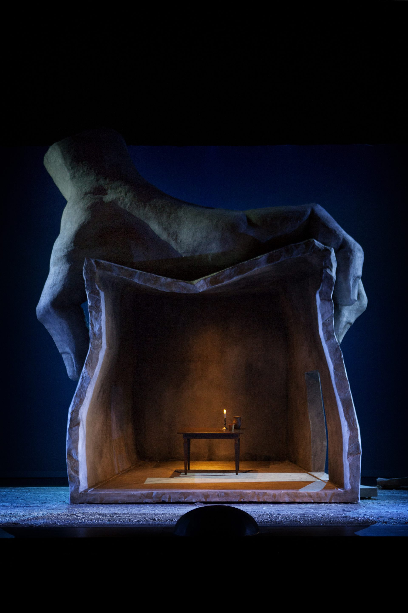
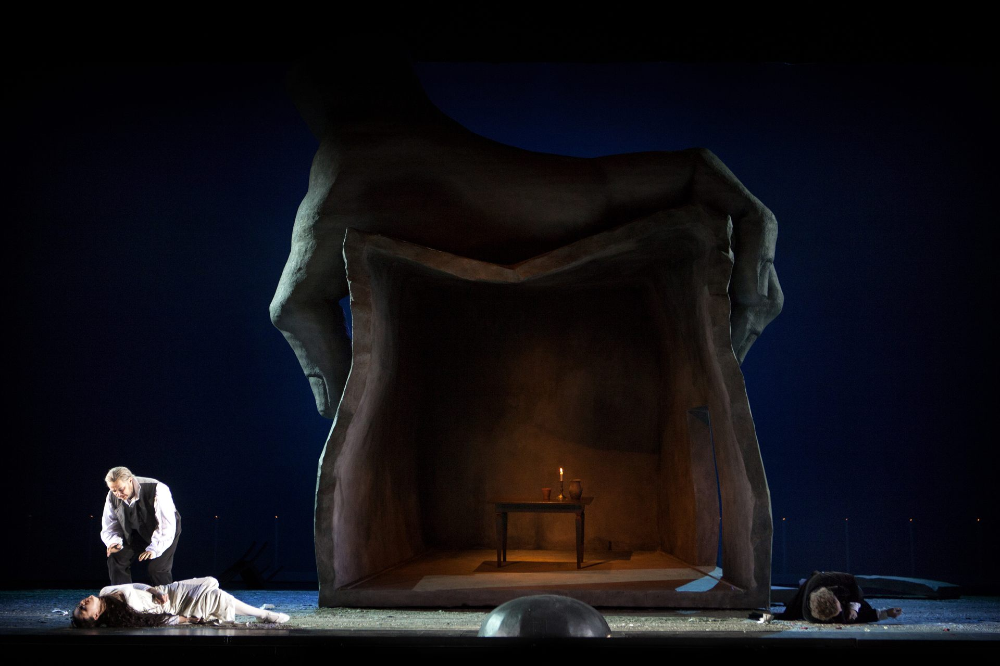
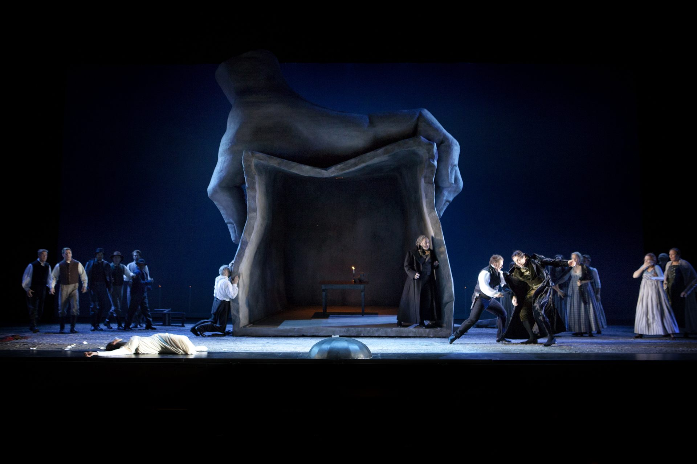
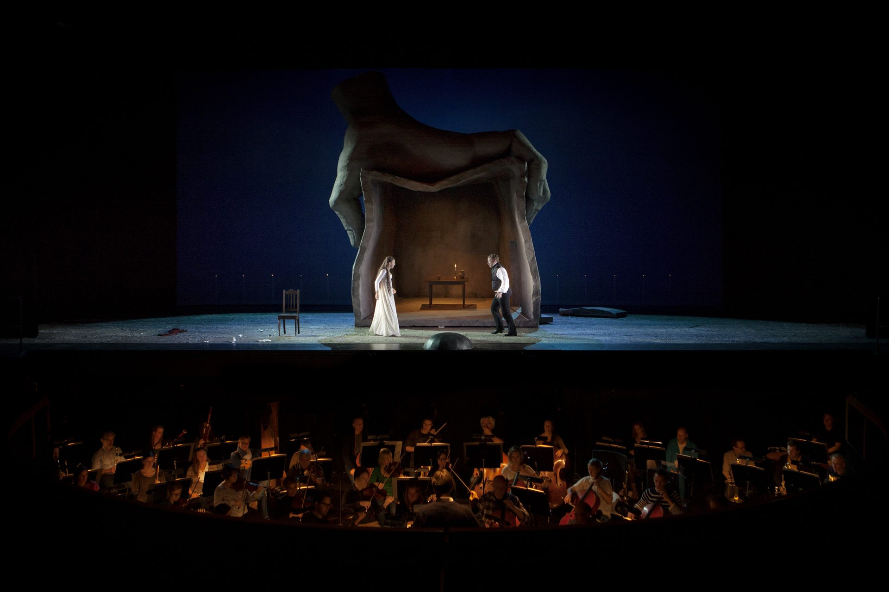
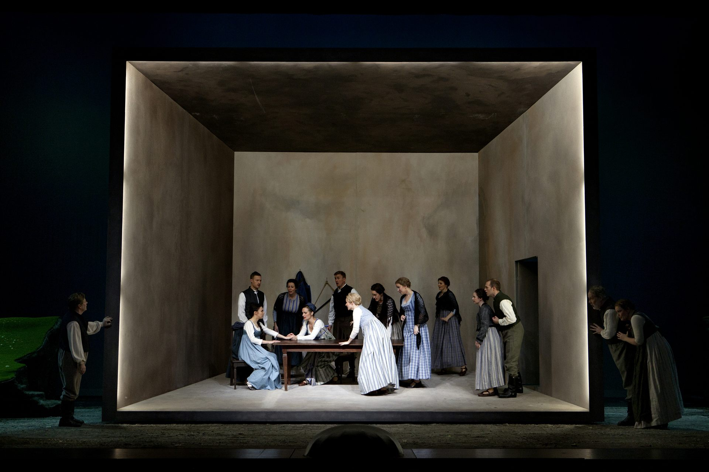
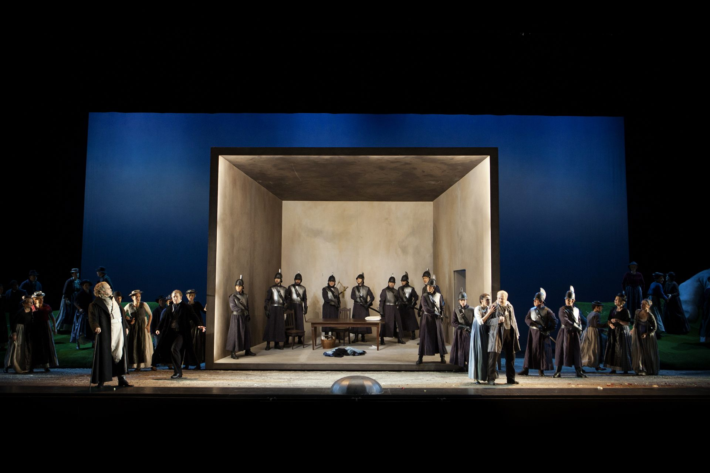
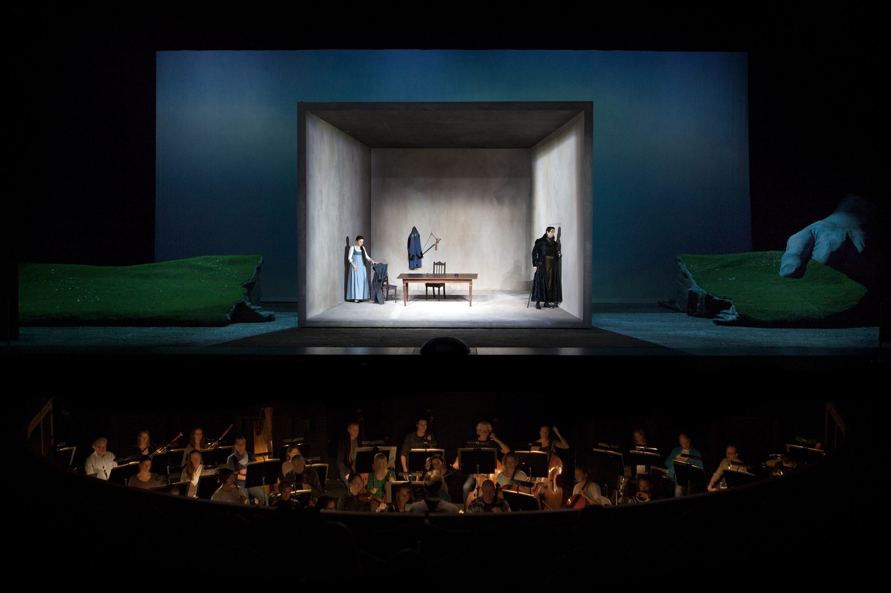
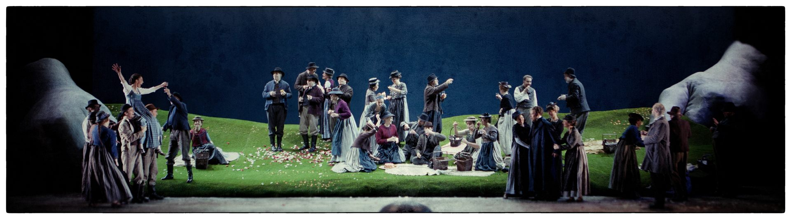
Photos © Malin Arnesson — Malmö Opera
Bozzetti Scenografici
The original set design sketches by Cristian Taraborrelli reveal the dramaturgical architecture behind each act: the idyllic lawn of Act I, Miller’s fragile house, the castle’s oppressive geometry, and the final destruction.
I bozzetti originali di Cristian Taraborrelli rivelano l’architettura drammaturgica dietro ogni atto: il prato idilliaco del primo atto, la fragile casa di Miller, la geometria oppressiva del castello, e la distruzione finale.
Les esquisses originales de Cristian Taraborrelli révèlent l’architecture dramaturgique derrière chaque acte : la pelouse idyllique du premier acte, la fragile maison de Miller, la géométrie oppressive du château, et la destruction finale.
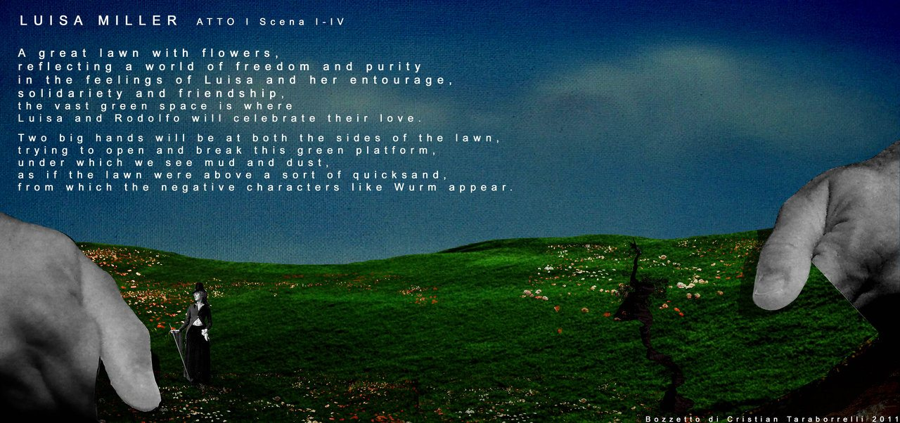
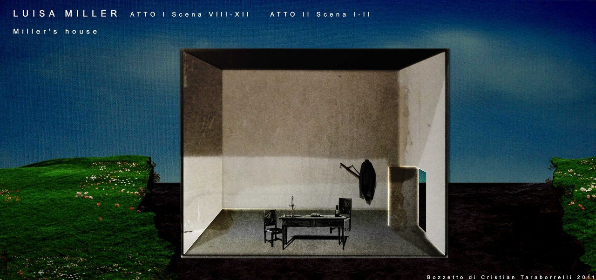
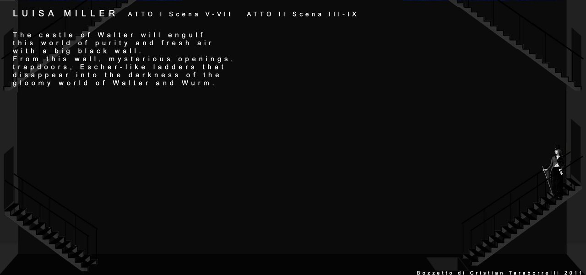
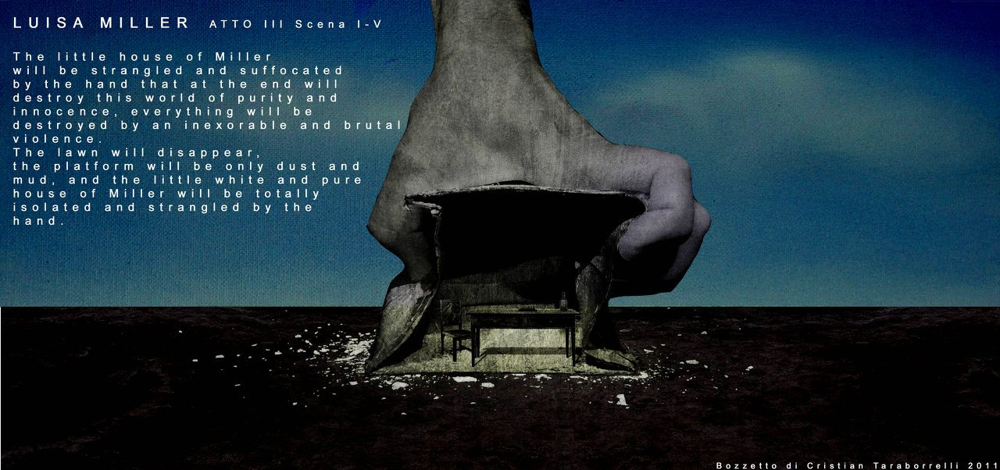
Bozzetti © Cristian Taraborrelli 2011
Trailer
Curiosità
Le mani come personaggi. Le due mani giganti non sono semplici elementi decorativi: sono protagoniste silenziose del dramma. Spaccano il prato dell’innocenza nel primo atto, comprimono la casa di Miller e infine la strangolano nel terzo. La scenografia respira e agisce come un personaggio vivente.
Il dramma borghese di Verdi. Luisa Miller (1849) segna un momento cruciale nella carriera di Verdi: l’abbandono dei grandi temi storici a favore del dramma intimo e borghese. Basata su Kabale und Liebe di Schiller, anticipa i capolavori della maturità come La Traviata.
Registrata in DVD e Blu-ray. La produzione è stata registrata dal vivo dalla Arthaus Musik e pubblicata in DVD e Blu-ray, ricevendo valutazioni eccellenti dalla critica internazionale. Opera on Video le ha assegnato il massimo punteggio: 5/5 per video e audio.
Malmö Opera. Il principale teatro d’opera della regione dell’Öresund, nel sud della Svezia. Con la sua programmazione internazionale e le produzioni di alta qualità, è un punto di riferimento per l’opera nel Nord Europa.
Scale alla Escher. Nel castello del Conte Walter, Taraborrelli ha progettato un sistema di scale, botole e aperture che si perdono nel buio, ispirandosi alle architetture impossibili di M.C. Escher: un labirinto visivo che riflette le trame di potere e inganno.
Hands as characters. The two giant hands are not mere decorative elements: they are silent protagonists of the drama. They split the lawn of innocence in Act I, compress Miller’s house, and finally strangle it in Act III. The scenography breathes and acts as a living character.
Verdi’s bourgeois drama. Luisa Miller (1849) marks a crucial moment in Verdi’s career: the shift from grand historical themes to intimate, bourgeois drama. Based on Schiller’s Kabale und Liebe, it anticipates the masterpieces of his maturity such as La Traviata.
Recorded on DVD and Blu-ray. The production was recorded live by Arthaus Musik and released on DVD and Blu-ray, receiving excellent ratings from international critics. Opera on Video awarded it the highest score: 5/5 for both video and audio.
Malmö Opera. The leading opera house of the Öresund region in southern Sweden. With its international programming and high-quality productions, it is a reference point for opera in Northern Europe.
Escher-like staircases. In Count Walter’s castle, Taraborrelli designed a system of stairs, trapdoors, and openings that disappear into darkness, inspired by M.C. Escher’s impossible architectures: a visual labyrinth reflecting the plots of power and deception.
Les mains comme personnages. Les deux mains géantes ne sont pas de simples éléments décoratifs : ce sont des protagonistes silencieux du drame. Elles fendent la pelouse de l’innocence au premier acte, compriment la maison de Miller et finalement l’étranglent au troisième. La scénographie respire et agit comme un personnage vivant.
Le drame bourgeois de Verdi. Luisa Miller (1849) marque un moment crucial dans la carrière de Verdi : l’abandon des grands thèmes historiques en faveur du drame intime et bourgeois. Basée sur Kabale und Liebe de Schiller, elle anticipe les chefs-d’œuvre de la maturité comme La Traviata.
Enregistrée en DVD et Blu-ray. La production a été enregistrée en direct par Arthaus Musik et publiée en DVD et Blu-ray, recevant d’excellentes critiques internationales. Opera on Video lui a attribué la note maximale : 5/5 pour vidéo et audio.
Malmö Opera. Le principal théâtre d’opéra de la région de l’Öresund dans le sud de la Suède. Avec sa programmation internationale et ses productions de haute qualité, c’est une référence pour l’opéra en Europe du Nord.
Escaliers à la Escher. Dans le château du Comte Walter, Taraborrelli a conçu un système d’escaliers, de trappes et d’ouvertures qui disparaissent dans l’obscurité, inspiré des architectures impossibles de M.C. Escher : un labyrinthe visuel reflétant les intrigues de pouvoir et de tromperie.
I Collaboratori
Regia
Stefano Vizioli
Regista lirico italiano, formatosi al Teatro alla Scala come assistente di Giorgio Strehler, Luca Ronconi e Pier Luigi Pizzi, attivo nei principali teatri d'opera europei (Glyndebourne, Bayerische Staatsoper Monaco, Théâtre du Capitole Toulouse, Opéra national de Bordeaux) e americani. Specialista del repertorio belcantistico e verdiano, ha firmato regie di riferimento per opere meno frequentate del Verdi giovane: Stiffelio, Aroldo, I Due Foscari, Luisa Miller. La sua cifra registica unisce filologia drammatica e scrittura visiva forte: un lavoro sul libretto che cerca metafore sceniche d'impatto, mai illustrative, capaci di restituire la violenza politica e sentimentale del melodramma. Con Cristian Taraborrelli firma anche I Due Foscari a Toulouse nel 2014.
Direttore d'orchestra
Michael Güttler
Direttore d'orchestra tedesco, formatosi a Lipsia, attivo nei principali teatri europei e in particolare in Russia e nei paesi nordici (Mariinsky di San Pietroburgo, Bolshoi di Mosca, Royal Opera House di Stoccolma, Malmö Opera). Specialista del repertorio italiano dell'Ottocento, lavora a stretto contatto con Valery Gergiev al Mariinsky e ne è spesso il direttore di riferimento per le produzioni verdiane. La sua lettura di Luisa Miller a Malmö cura particolarmente i tempi serrati del primo atto e il declamato drammatico del finale terzo, con un'attenzione speciale alla tessitura del coro.
Costumi
Anna Maria Heinreich
Costumista italo-tedesca, collaboratrice abituale di Stefano Vizioli e di numerose produzioni del circuito europeo. Per Luisa Miller a Malmö firma una galleria di costumi che riflette la triplice geometria della scena: bianco e verde tenero per il mondo di Luisa e dei contadini, nero e cuoio per la corte di Walter, rosso violento per gli snodi della catastrofe. La sua scelta di tessuti e tagli cinquecenteschi rivisitati in chiave contemporanea sostiene la dimensione metaforica della scenografia.
Disegno luci
Guido Petzold
Lighting designer tedesco, formatosi nel teatro lirico di Berlino, attivo nei principali teatri europei e in particolare a Malmö, Berlino, Tolosa. Lavoro fortemente architettonico, con preferenza per fasci radenti che scolpiscono i volumi scenografici e per contrasti netti luce-ombra che restituiscono la dimensione drammatica del melodramma. Per Luisa Miller costruisce una luce che racconta la metafora delle mani giganti: dall'apertura solare del primo atto al buio claustrofobico del castello, fino al taglio violento del finale.
Direction
Stefano Vizioli
Italian opera director, trained at Teatro alla Scala as assistant to Giorgio Strehler, Luca Ronconi and Pier Luigi Pizzi, active in major European opera houses (Glyndebourne, Bavarian State Opera Munich, Théâtre du Capitole Toulouse, Opéra national de Bordeaux) and in the Americas. A specialist of bel canto and Verdian repertoire, he has signed reference stagings for the rarer works of the young Verdi: Stiffelio, Aroldo, I Due Foscari, Luisa Miller. His directorial signature combines dramatic philology and strong visual writing: a work on the libretto that seeks impactful, never illustrative scenic metaphors, capable of restoring the political and sentimental violence of melodrama. With Cristian Taraborrelli he also signs I Due Foscari at Toulouse in 2014.
Conductor
Michael Güttler
German conductor, trained in Leipzig, active in major European theatres and especially in Russia and the Nordic countries (Mariinsky St. Petersburg, Bolshoi Moscow, Royal Opera House Stockholm, Malmö Opera). A specialist of Italian nineteenth-century repertoire, he works closely with Valery Gergiev at the Mariinsky and is often the reference conductor for its Verdian productions. His reading of Luisa Miller in Malmö pays particular care to the tight tempos of Act I and the dramatic declamato of the third-act finale, with a special attention to chorus texture.
Costumes
Anna Maria Heinreich
Italian-German costume designer, regular collaborator of Stefano Vizioli and of many productions on the European circuit. For Luisa Miller in Malmö she signs a costume gallery that mirrors the threefold geometry of the set: white and tender green for Luisa's world and the peasants, black and leather for Walter's court, violent red for the catastrophe's pivotal moments. Her choice of fabrics and Renaissance-derived tailoring reworked in a contemporary key supports the metaphorical dimension of the scenography.
Lighting Design
Guido Petzold
German lighting designer, trained in Berlin opera, active in major European theatres and especially in Malmö, Berlin and Toulouse. A strongly architectural approach, preferring raking beams that sculpt scenographic volumes and sharp contrasts between light and shadow that restore the dramatic dimension of melodrama. For Luisa Miller he builds a light that tells the metaphor of the giant hands: from the solar opening of Act I to the claustrophobic darkness of the castle, to the violent cut of the finale.
Mise en scène
Stefano Vizioli
Metteur en scène lyrique italien, formé au Teatro alla Scala comme assistant de Giorgio Strehler, Luca Ronconi et Pier Luigi Pizzi, actif dans les principaux opéras européens (Glyndebourne, Opéra national de Bavière Munich, Théâtre du Capitole Toulouse, Opéra national de Bordeaux) et américains. Spécialiste du répertoire belcantiste et verdien, il a signé des mises en scène de référence pour les œuvres moins jouées du jeune Verdi : Stiffelio, Aroldo, I Due Foscari, Luisa Miller. Sa signature unit philologie dramatique et écriture visuelle forte : un travail sur le livret qui cherche des métaphores scéniques fortes, jamais illustratives, capables de restituer la violence politique et sentimentale du mélodrame. Avec Cristian Taraborrelli il signe aussi I Due Foscari à Toulouse en 2014.
Chef d'orchestre
Michael Güttler
Chef d'orchestre allemand, formé à Leipzig, actif dans les principaux théâtres européens et en particulier en Russie et dans les pays nordiques (Mariinsky de Saint-Pétersbourg, Bolchoï de Moscou, Royal Opera House de Stockholm, Malmö Opera). Spécialiste du répertoire italien du XIXe siècle, il travaille étroitement avec Valery Gergiev au Mariinsky et en est souvent le chef de référence pour les productions verdiennes. Sa lecture de Luisa Miller à Malmö soigne particulièrement les tempi serrés du premier acte et le déclamato dramatique du final du troisième, avec une attention spéciale à la texture chorale.
Costumes
Anna Maria Heinreich
Costumière italo-allemande, collaboratrice habituelle de Stefano Vizioli et de nombreuses productions du circuit européen. Pour Luisa Miller à Malmö elle signe une galerie de costumes qui reflète la triple géométrie de la scénographie : blanc et vert tendre pour le monde de Luisa et des paysans, noir et cuir pour la cour de Walter, rouge violent pour les pivots de la catastrophe. Son choix de tissus et de coupes Renaissance retravaillées dans un registre contemporain soutient la dimension métaphorique de la scénographie.
Création lumière
Guido Petzold
Créateur lumière allemand, formé dans le théâtre lyrique berlinois, actif dans les principaux opéras européens et en particulier à Malmö, Berlin, Toulouse. Travail fortement architectural, avec une préférence pour les faisceaux rasants qui sculptent les volumes scénographiques et pour les contrastes nets ombre/lumière qui restituent la dimension dramatique du mélodrame. Pour Luisa Miller il construit une lumière qui raconte la métaphore des mains géantes : de l'ouverture solaire du premier acte à l'obscurité claustrophobique du château, jusqu'à la coupe violente du final.
Stampa e Recensioni
Team Creativo
Cast
Tags